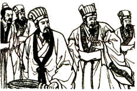
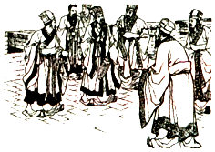
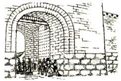
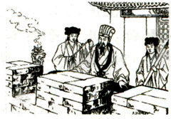
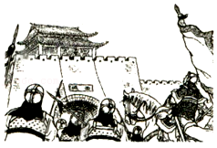
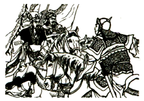
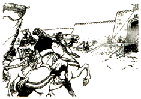
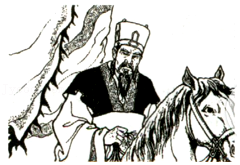
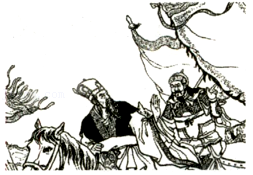

2015年北京市中考语文试题 · 名著阅读 第11、12题
三、名著阅读（共7分）
11．（4分）阅读下面的连环画，完成问题。
 1．孔明在西城正分兵运粮，听报司马懿大军进攻。这时，孔明手下只剩一些文官，他们听了探报，都惊慌起来。 |  2．众官纷纷议论。孔明沉思片刻后，微微笑道“不必惊慌，我早埋伏下十万雄兵，在此等候司马懿。 |
 3．孔明传令各自隐蔽，又命大开四门，挑选几十个老兵扮成百姓，去城门口打扫街道，叮嘱道：“魏兵到来，不得慌张。” |  4．孔明叫两个童儿，捧着古琴、香炉，跟他走上城楼。他端坐在城楼前面，焚起一炉好香，平心静气，弹起琴来。 |
 5．魏军的前哨到了城下见城门大开，只有百姓打扫街道，又望见孔明正在城上弹琴，又惊又疑，不知所措。 |  6．司马懿听了前哨的报告，半信半疑。他传令大军就地休息，暂停前进，自己带随从前往西城。 |
 7．司马懿飞马来到西城远远望去，看不见一旗帜，一兵一卒。 |  8．孔明安坐城楼，慢条斯理地拨动琴弦。司马懿仔细听去，那琴声丝毫不乱。 |
 9．司马懿道：“孔明一生谨慎，城里定有伏兵，赶快撤退，免得中计。”遂火速退兵。 | |
（1）连环画中有一幅是通过司马懿的专注神情来表现诸葛亮的临危不乱，这幅画是第 幅。
（2）从连环画的内容来看，足智多谋的诸葛亮临危不乱，使用 的计谋吓退了司马懿，化险为夷。同样能表现诸葛亮足智多谋的故事在小说《三国演义》中还有很多，比如 。
（3）诸葛亮的形象经常出现在京剧舞台上。从连环画和下面的链接材料可以看出，京剧舞台上的诸葛亮应当由生行中的 来扮演。
【链接材料】
行当是指戏曲演员专业分工的类别。生行是京剧表演行当的主要类型之一。根据所扮演人物年龄、身份的不同，生行又分为老生、武生等。老生多挂髯口（胡须），扮演中年或老年男子，多为性格正直刚毅的正面形象。小生扮演青年男性，演唱时真假嗓音合用，表现亲年人的活力和潇洒。武生扮演擅长武艺的青壮年男子。
12．（3分）小说《红岩》塑造了众多革命烈士的形象。下面三个语段分别写到三位烈士在与敌人面对面斗争时说出的话，表现了他们宁死不屈、甘为崇高理想献身的高尚品质。
请你从每个语段后面的括号中选择一位烈士的名字，分别填写在横线处。
①面对敌人的威逼利诱， 高声说道：“人，不能低下高贵的头，只有怕死鬼才乞求‘自由’．毒刑拷打算得了什么？死亡也无法叫我开口！”（成岗 刘思扬）
②面对敌人的刑讯逼供， 凛然说道：“上级的姓名、住址，我知道。下级的姓名、住址，我也知道……这些都是我们党的秘密，你们休想从我口里得到任何材料！”（江雪琴 李青竹）
③革命烈士 在英勇就义前毅然说道：“人生自古谁无死？可是一个人的生命和无产阶级永葆青春的革命事业联系在一起，那是无上的光荣！这就是我此时此地的心情。”（许云峰 齐晓轩）